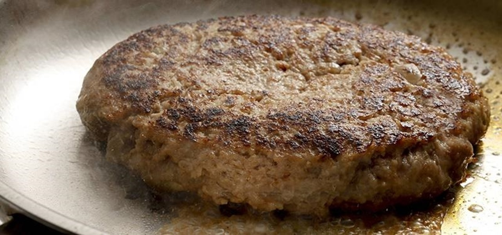

Ground Beef

Description
Grass Fed Beef
-
1 pound 85/15 grass fed ground beef
-
1/2 teaspoon grass fed beef tallow
-
Pink Salt
Steps
-
Heat cast iron pan to 7/10 heat
-
Shape 1 pound beef to two 8 ounce patties
-
Salt appropriately
-
Cook for 3 minutes on first side and 1.5 minutes on second side
-
Enjoy